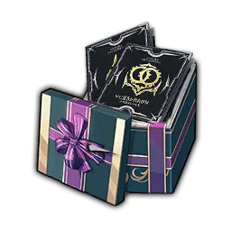
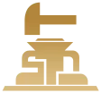
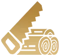

Mejoras de Season 2
Mejoras de Season 2
Gear Refinement
- Refinamiento: Sube hasta nivel 30. (Niveles 21-30 usan Starforge Crystal T3 + mystery metal).
- DPS: Mantén armadura +10/15 y ATK/MATK lo más alto posible.
- Conversión: Puedes convertir
 crystals actuales. Requiere pociones fabricadas con
crystals actuales. Requiere pociones fabricadas con  Tokiwa Grass (1 Grass : 1 Potion).
Tokiwa Grass (1 Grass : 1 Potion).
Skills / Talent Tree
- Class Book Reset Event: Sucede al inicio de la S2. Podrás resetear tus libros de clase.
Adventurer Level
- Deep Sleep Levels: Nuevo sistema de niveles aparte del Adventurer Level actual.
- Quests: Completa las de S1 ahora; algunas de S2 requieren progreso previo de S1.
Imagines y Armas
- Imagines: Algunas clases reemplazan sus Imagines. Rorola es muy fuerte para casi todas las clases.
- Ocean Weapon: Sigue siendo Best-in-Slot durante toda la S2 (solo para giga whales).
 Advertencias: Gear Obsoleto
Advertencias: Gear Obsoleto
- Gear Nivel 80/90: No obtiene Dream Strength (stat vital para el daño significativo en S2).
- Materiales S1: Refinement Stones y Alloy Shards de S1 no se pueden convertir. Úsalos ahora o guárdalos para Guild Cargo.
- Ocean Weapon Lv 100: Este arma obtiene Dream Strength gratis.
- Emblema S1: Se elimina al inicio de la temporada. Void Materials y Season 1 Points serán inutilizables.
- Gemas: Inutilizables en gear de S2. Reemplazadas por el Imprint System.
Life Skills & Crafting
- Life Skill Leveling: Mantienes tus niveles, pero el límite aumenta. Las weeklies se reemplazan por Life Skill EXP Boxes en la Honor Store.
- Legendary Gear: Ahora pueden tener el Star Morado. Requieren Engram Crystal Shards.
- Prioridad: Arma Nivel 120 > Charm > Botas.
Requisitos de Profesión
- Armas (SK/HG): Smelting (Nivel 42/48)
- Armas (WK/SB): Smelting (Nivel 44/50)
- Clases Rango: Artisanry (Nivel 45/50)
- Charms: Weaving (Nivel 45/51)
- Boots: Weaving (Agi/Int) o Smelting (Str).
Guía de Conversión
• 1 Starforge Potion = 1 Tokiwa Grass + 10 Focus
• T1 > T2: 1 Potion + 2 T1 Crystals
• T2 > T3: 3 Potions + 2 T2 Crystals
Tokiwa Grass + 10 Focus• T1 > T2: 1 Potion + 2 T1 Crystals
• T2 > T3: 3 Potions + 2 T2 Crystals
Materiales Universales
- Purple Imagine: 5x Purple Universal Mats (Total 30 Grass para T0-T5).
- NPC Legendary Imagine: 10x Legendary Universal Mats (Total 300 Grass para T0-T5).
Limpieza de Inventario
- Vender/Tirar: Pociones/Serums S1, Raw Materials de Botany/Mineralogy/Gemology, Reforge Stones (40-80), Purple Imagine Wills.
- Mercado: Restricciones cambian de 30 a 90 días. Los Class Books podrían bajar de precio el 15 de enero.
- Wound Piggy: Es bueno en S2 para curación de grupo y saltar fases en Dungeons.
Tips Misceláneos
- Guarda Wish Coins para Rorola y Bound Rose Orbs para S2 Gold Imagine Mats.
- Hard/Master Mode: Probabilidad garantizada de 1x legendary (3x con Cheer-Up Treat).
- Presets: Hasta 10 disponibles. Permiten cambiar Clase, Skills, Talents, Modules, Imagines y Gear.
- Shadow Hunter Set: Se obtiene farmeando materiales garantizados en S2.
- Aprende Mahjong.